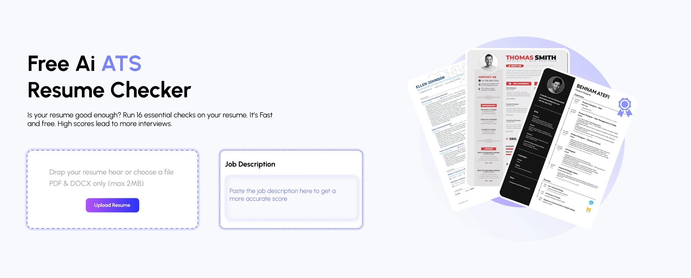
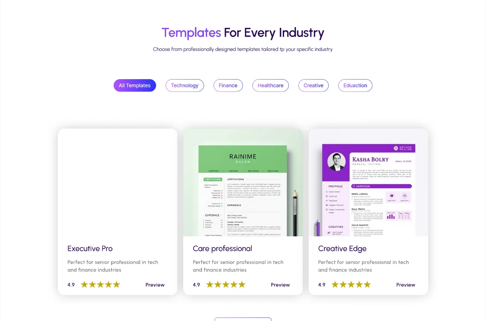
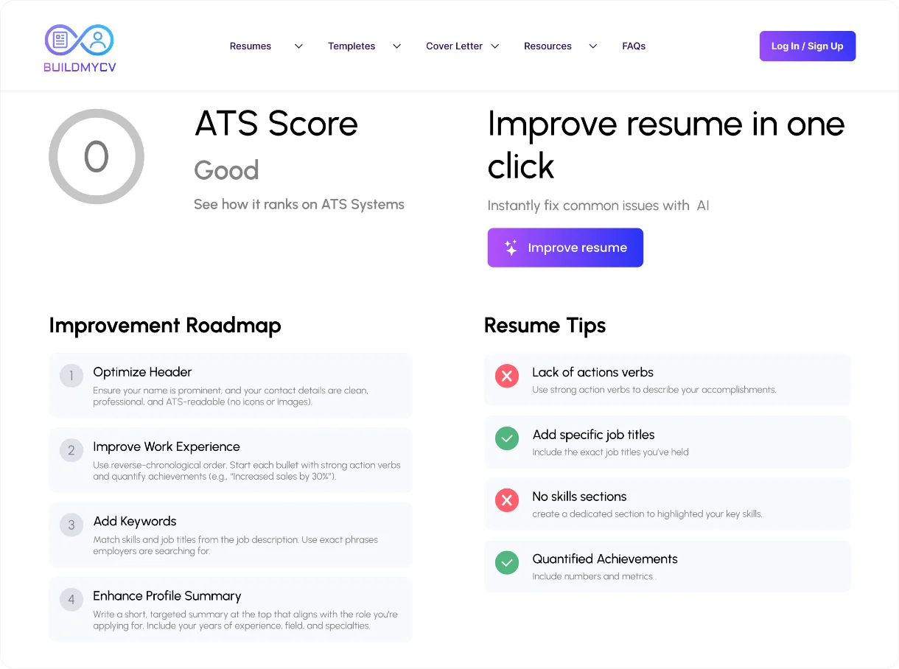

An AI-powered resume builder
BuildMyCV helps job seekers create resumes and portfolios that stand out. It combines editable templates, an ATS score checker and AI writing suggestions in one place. I designed it as part of a two-person design team.


01The product
Resume tools that felt generic and gave no guidance
Most resume builders relied on rigid templates, gave no feedback on how a resume performs with applicant tracking systems (ATS), and offered no writing help. BuildMyCV set out to fix all three, and to let users add a portfolio alongside their resume.
-
01
Generic templates, no personalisation
Category-based editable templates with flexible layouts that adapt to different industries and goals.
-
02
No ATS feedback or scoring
An ATS checker with a visual progress bar and improvement tips, so users see how job-ready their resume is.
-
03
No AI help or portfolio space
AI writing suggestions with prompt-based editing, plus portfolio sections for blogs, videos and podcasts.
02My role
Visual execution in a two-designer team
I worked as the junior designer alongside Kulsum Siddiqui, a senior UI/UX designer who led the overall direction, structure and information flow.
My focus was the visual execution: building reusable layout structures, designing key screens including the resume editor, template section and blog layouts, and iterating on feedback to bring polish to the interface.
Design process
-
Week 1
Resume templates
A range of modern, creative and corporate templates that became the visual backbone of the product.
-
Week 2–3
Landing page
A clean, futuristic look with an ATS checker preview, template showcase and a guided getting-started flow.
-
Week 4
Resume builder
The editing panel, template switching, ATS progress bar and AI content suggestions.
-
Week 5
Supporting screens
Blogs, videos and podcasts, plus login and sign-up flows aligned with the rest of the product.
03Inside the product
Key screens



Next project